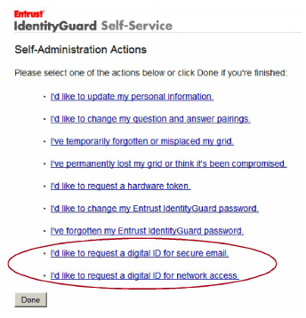
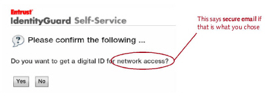
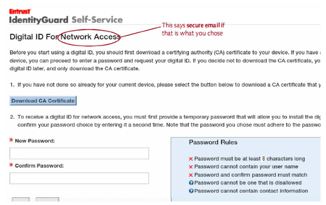
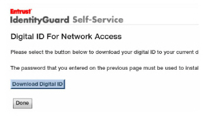
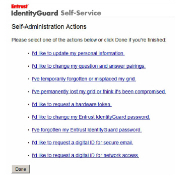

|
IdentityGuard Server 13.0 Administration Guide |
|
IdentityGuard Server 13.0 Administration Guide |
Test the configuration with the mobileenroll user you created earlier.
Note: The instructions below assume you want PKCS#12 digital IDs. If you are using SCEP, see instead the ”iPad – network access” section of the Entrust IdentityGuard Self-Service Module User Guide.
To test mobile enrollment
1. Obtain a supported mobile device.
2. On the mobile device, open a browser window and go to the Self-Service site at https://<SSMHost>:8445/IdentityGuardSelfService. (In a real deployment, you could email this URL to your users so that they do not have to type it in.)
3. Log in as mobileenroll.
The Self-Service site appears.

4. Click I’d like to request a digital ID for secure email or I’d like to request a digital ID for network access.
The Please confirm the following page appears.

5. On the Please confirm the following page, click Yes.
The Digital ID For Secure Email or Digital ID for Network Access page appears.

6. Click Download CA Certificate to install the CA certificate on the device. The download will include a chain of CA certificates, if you have a CA hierarchy. Installation steps are device-specific. See the Self-Service Module User Guide for examples.
7. If you are on a BlackBerry device, click the Back/Return arrow button on the device to return to the Digital ID For Secure Email or Digital ID for Network Access page. All other devices return the user to this page automatically after downloading the CA certificate.
8. In the New Password and Confirm Password fields, specify a password for the digital ID and click Next.
A page appears where you can download the digital ID.

9. Click Download Digital ID. Install the digital ID on the device. As with the CA certificate, installation steps are device-specific. See the Self-Service Module User Guide for a few examples.
10. Click Done in Self-Service after you have installed the digital ID.
You are returned to the main Self-Service page.
